Teenagers still form bands in 2026. Getting everyone into the same room has become the harder part.
As time, space, and social life become more fragmented, low-friction social apps and online spaces are easier to enter than a physical gathering. JamSesh is our attempt to answer that through design. We developed a low-friction, postmodern parody of an instrument for teenagers, bringing their ways of thinking and joking back into physical space, body movement, and being together.
01 / Can I come to your house?
The literature we reviewed suggested that, after the pandemic, teenagers were spending less time at friends’ houses after school. Third places—public spaces outside home and school—seemed to be playing a smaller role too. Making friends offline, and then staying friends offline, takes more effort when there are fewer places to meet.
We also looked at how hard it can be to become friendly with someone new. Trust takes time, and starting a conversation with a stranger can be a large request. A shared interest or activity gives two people something to talk about and something to do.
That helped us understand the appeal of a high school band. It is collaborative and relatively low on competition. Friends can gather around a performance without having to arrange a meeting just to socialize. The catch is that someone has to know how to play an instrument. We kept the group activity and lowered that barrier. Borrowing simple pitch-shifting effects from parody video edits and DJ culture, we made a music toy that uses space, position, and movement to rearrange recorded sounds.
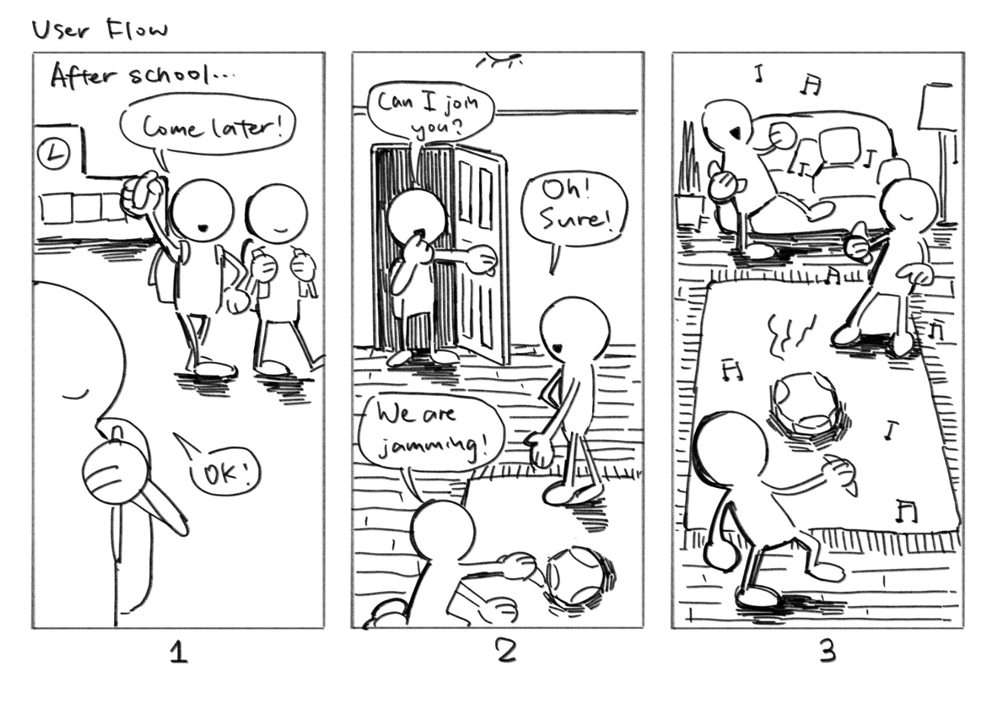
02 / The Play
How do you play this instrument? Our requirement was simple: the entry point had to be low enough for an ordinary human to start, while the ceiling had to be high enough for it to stay a real creative tool after the first five minutes.
We looked at existing instruments. The theremin caught our attention because its player seems to make music in the air. The movement is visible, almost like a dance. An instrument played in open space felt right for JamSesh.
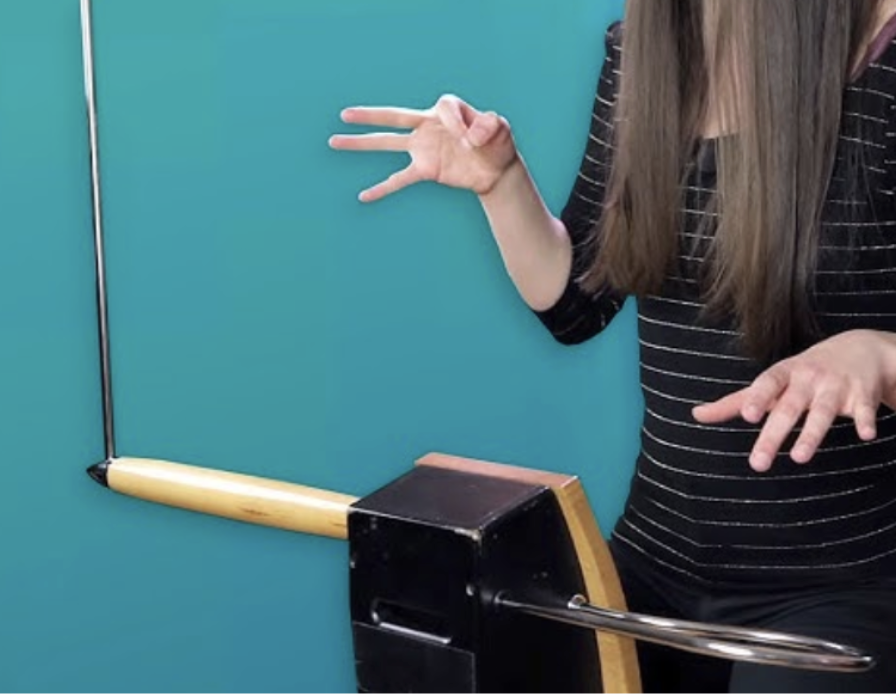
We gave players three ways to change a sound.
Rhythm
Start with one short recorded sound. It could be a violin note in C major. It could also be a fart. The wheel selects the sound; pressing the large button places it in time. That sample sets the material for the group, whether they want a musical key or a very specific parody soundtrack.
Pitch
Tilting the handheld changes the pitch of the selected sound. A gyroscope reads the angle, and software remaps the sample. The hand gets to do something more than press a button.
Volume
Move closer to another player and the sound gets louder. Move apart and it gets quieter, like proximity chat in a game. Where people stand changes the balance between their parts, so arranging the group in the room becomes part of playing.
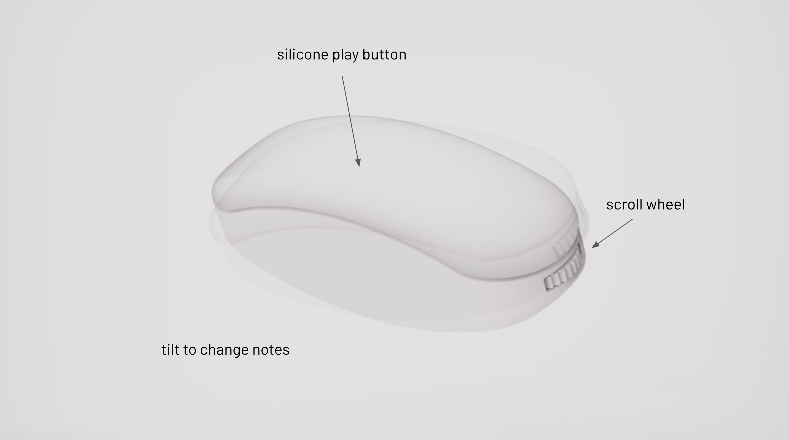
Our presentation documents an ESP32-C6 input and Bluetooth prototype, with Python and pydub used to remap the pitch of a sample. The diagrams show the intended mapping of movement, button presses, and proximity to sound. They do not establish the latency of a finished, integrated instrument.
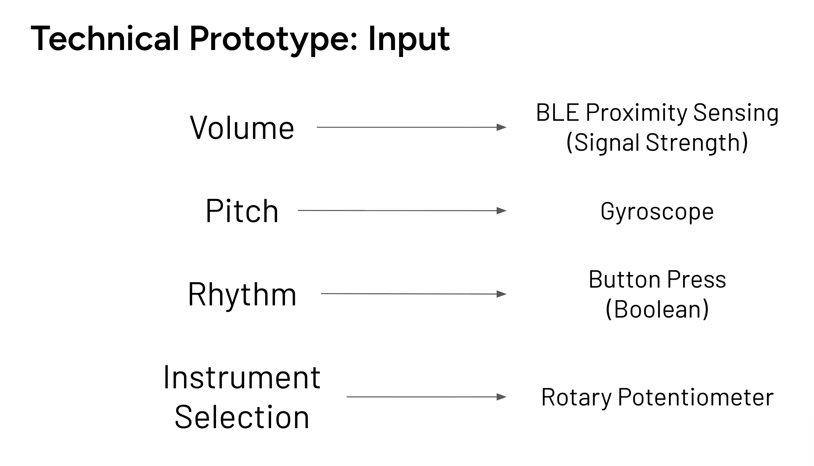
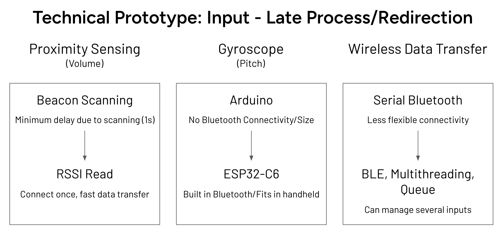
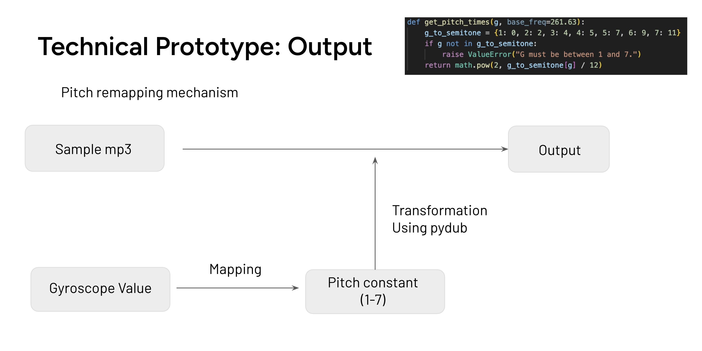
03 / The Product
We began with sketches of rounded, symmetrical handhelds and different positions for the play button. CAD made two problems easier to see: some versions were too small, and others suggested the wrong grip. We widened and softened the body, kept the button easy to find, and gave the object a clear horizontal axis so tilting it would feel deliberate.
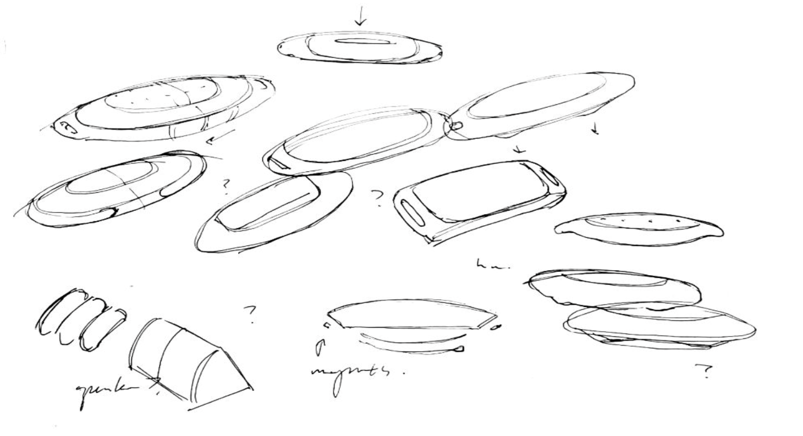
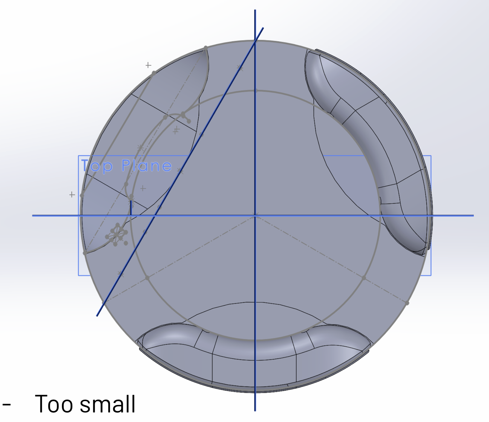
The final proposal pairs several handhelds with a shared speaker. The speaker gives everyone one sound source and shows which sound is selected. The handhelds attach to it for storage and charging. We also proposed a microphone and record button for adding new sounds; the technical prototype in the presentation uses prepared samples.
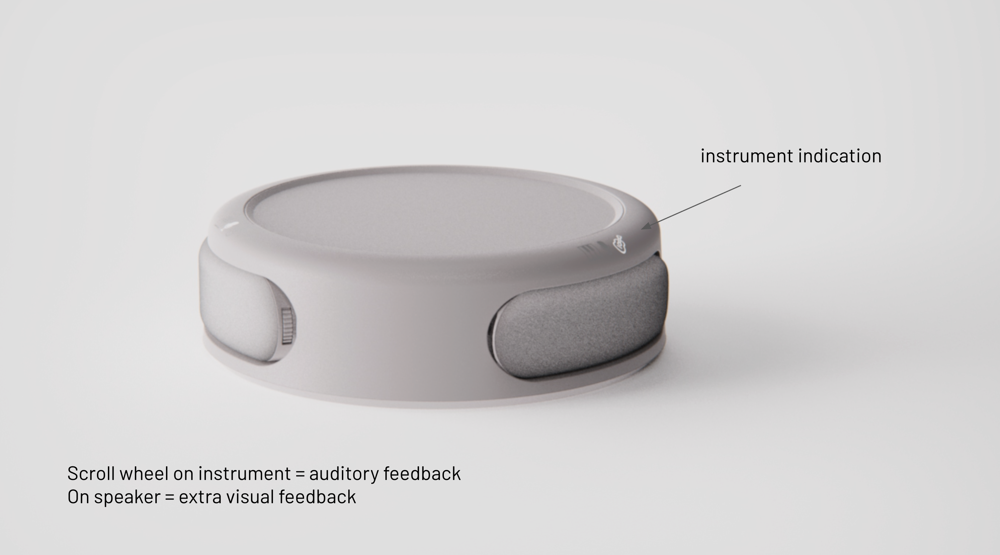
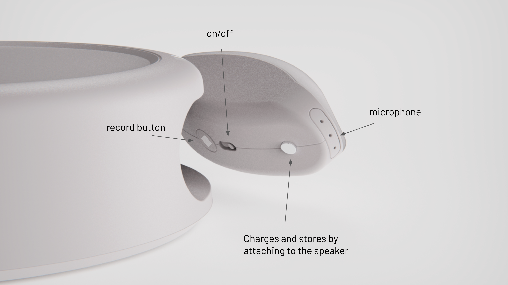
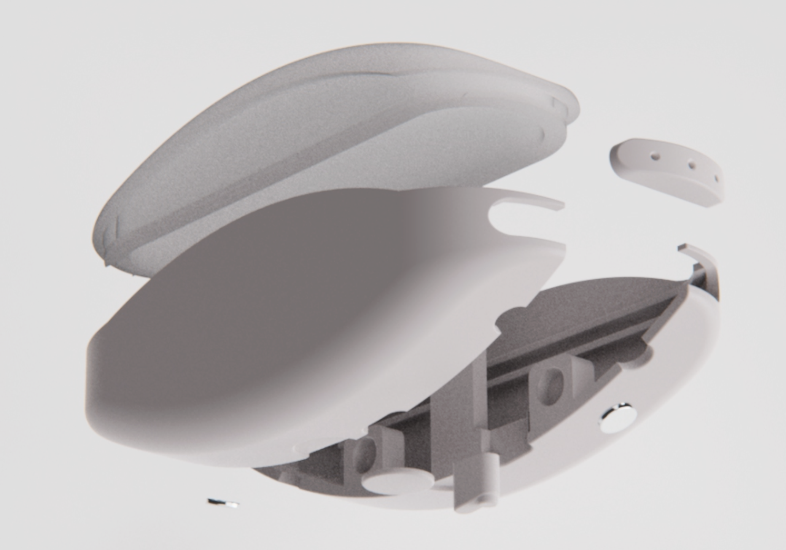
Prototype in motion
Project videoA demonstration of the handheld prototype. The renders above show the proposed final form.